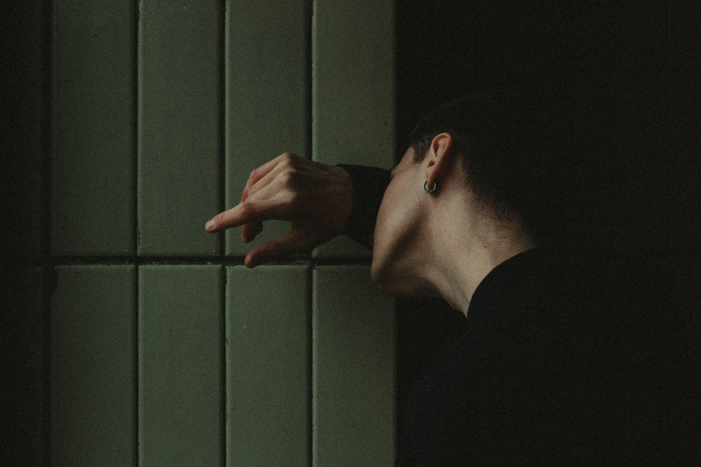

文章焦點 2020年5月14日
安吉拉·宋
Angela Sung 是最稀有的藝術家，她樂於在戶外繪畫的同時使用數字技 術和傳統技術進行繪畫。她大膽的色彩和筆觸使她與同時代的人區別 開來。在與夢工廠、卡通網絡、尼克國際兒童頻道和華納兄弟動畫 Netflix 合作後，安吉拉在不練習自己的藝術時也會進行教學和輔導。
我確實經常描繪這兩個主題。當我旅行時，當我想念我過去的旅行時，或者當我對未來旅行的新旅行目的地感到興奮時，我都會畫風景。當我厭倦了畫風景畫時，我就畫靜物:) 對這個問題的簡短回答是，我喜歡從生活中觀察和學習。風景畫和靜物畫讓我有機會向世界展示和分享我的發現。
當我傳統繪畫時，局限性教會我如何找到解決方案；當我以數字方式繪畫時，無限的選擇和界限幫助我進一步推動我的完成和想法。我的意思是，你不只是喜歡色調/飽和度滑塊，哈哈！弄清楚傳統藝術的工作流程也很棒，因為這是您加強藝術基礎的方法，例如色彩混合的基礎知識、畫筆經濟，以及如何思考以免弄亂構圖。
努沃霍爾的前景如何？更多的藝術和更深刻的故事即將出現。我有幾個大項目正在進行中，但你只需要等待，看看它們是什麼。我希望你會像我一樣喜歡它們。
通過創作美食畫，我揭開了它們背後的那些特別故事。在某種程度上，食物畫是我的日記。當我畫這些圖像時，我可以記住這些菜餚給我帶來的氛圍、情緒和味道。我也只是喜歡美食，和大家分享一些我最喜歡的菜讓我很開心！當人們告訴我他們喜歡吃同樣的東西或告訴我嘗試新事物時，我喜歡它。食物只是將人們聚集在一起！
你之前說過你從現實生活中汲取靈感。哪些生活時刻對您和您的工作產生了最大的影響和影響？